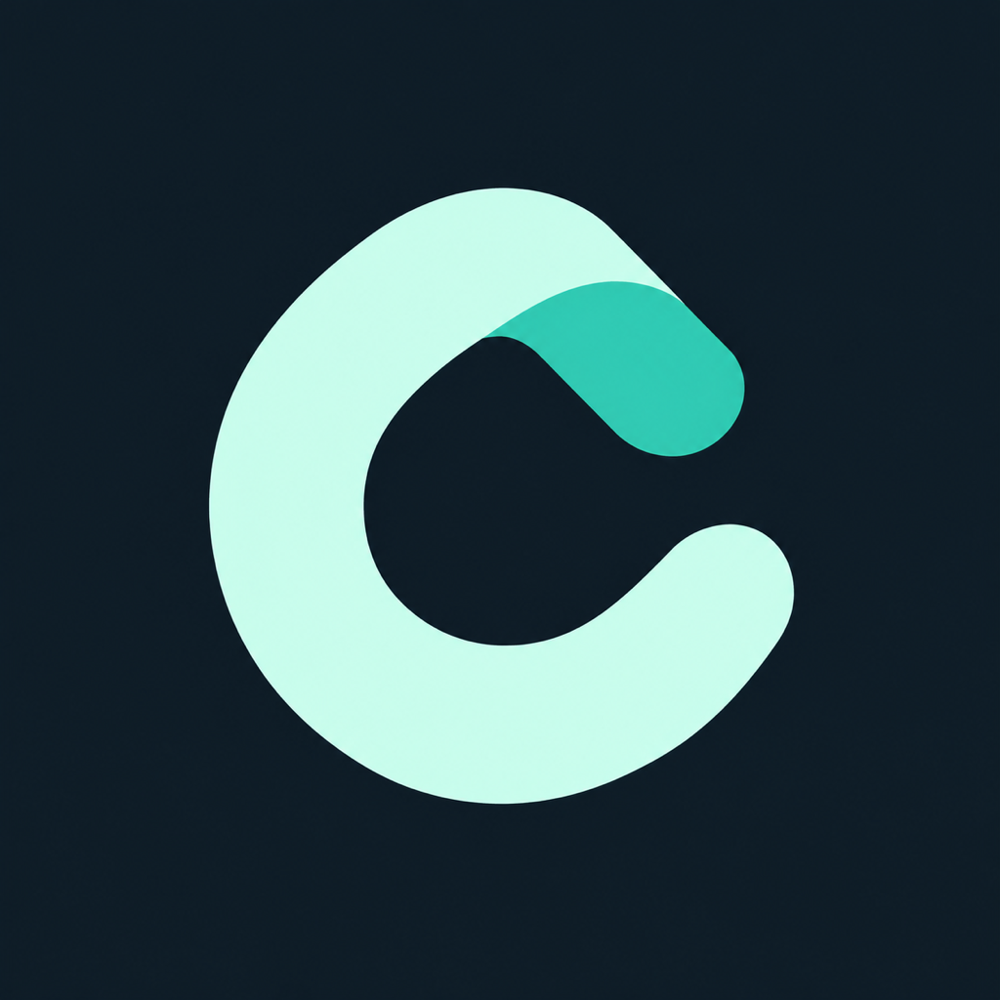

Your originals.
Two destinations.
Back up photos and videos to Google Photos, Telegram, or both. A focused uploader that keeps each destination moving independently.

Keep the original. Know what is saved.
- Original files
- Photos and videos stay uncompressed. Live Photo choices are explicit; Telegram preserves both original components and their association metadata.
- Separate progress
- See photo and video counts for each destination, measured file progress, and clear reasons when an item needs attention.
- Recover before retrying
- Local receipts record confirmed content. Uncertain sends are checked before another upload, with bounded automatic attempts.
- A little less screen
- A quiet Keep Awake mode for foreground backups, light and night themes, and small thumbnails only when you need to identify a problem file.
Your iPhone. Your signing method.
Add the Voryn Labs source. Choose Cloudified in your installer and follow its signing or import steps.
One Voryn Labs source includes both Cloudified and Musyn. Add it once to browse both apps in your installer.
Open on your iPhone with your chosen installer installed. LiveContainer source support requires a recent version. AltStore Classic is supported; AltStore PAL cannot install this unsigned IPA.
Setup & installation notes
- Feather, SideStore or another compatible signer
Requires iOS 26 or later. Import the unsigned IPA and sign it using your own certificate or installer. Keep the public bundle ID, com.vorynlabs.cloudified, consistent across updates.
- LiveContainer
Import the IPA into a supported LiveContainer version. Cloudified uses foreground backup there; keep the guest open. Background relaunch is not promised.
- Link your destinations
Allow Photos access, connect your Google account and/or Telegram account, then map a private Telegram channel. Each destination can be enabled independently.
Add the source manually if your installer does not open:
https://voryn-labs.github.io/source.json
Keep the same signing identity and app container when updating to preserve your local queue and account links. Read the setup guide ↗
A few things to know
Google uses an unofficial integration. Quota treatment and continued availability can change. Telegram archives are cloud documents, not end-to-end encrypted Secret Chats. iOS controls background time for installed apps.